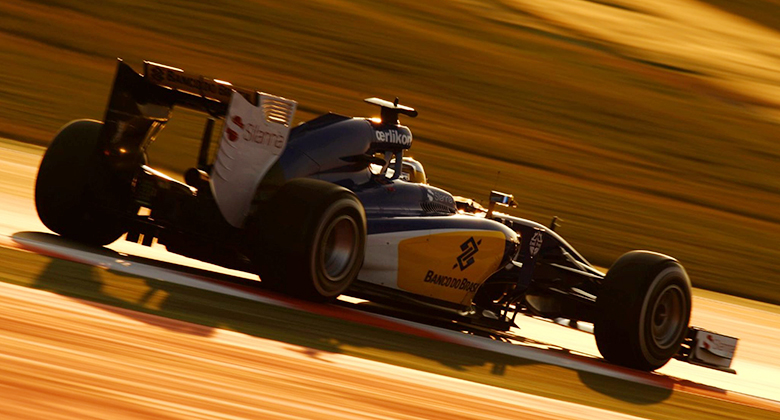
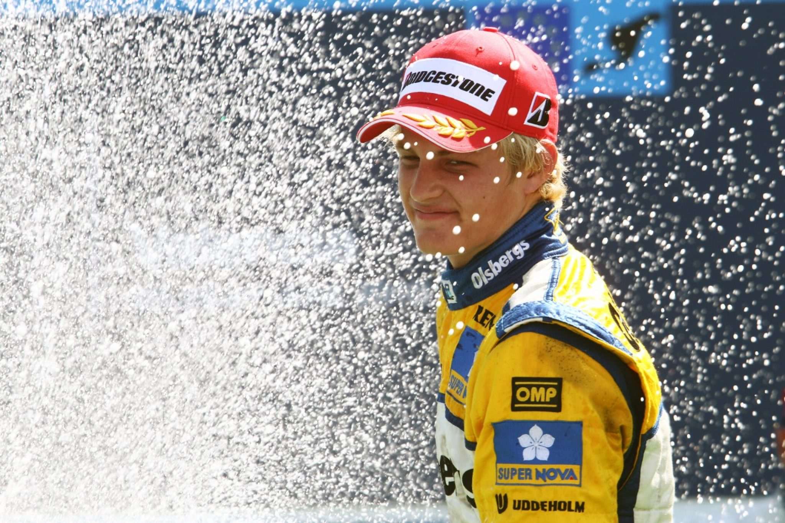

Sauber

2012
Season starts well, with Perez earning high praise for impressive podiums in Malaysia and Canada. C31 proves a competent, all-round package and,
though inconsistent, Perez and Kobayashi add further podiums in Italy and Japan in the second half of the season.
Team
- Full Team Name: Sauber F1 Team
- Base: Hinwil, Switzerland
- Team Chief: Monisha Kaltenborn
- Technical Chief: Mark Smith
- Chassis: C34
- Power Unit: Ferrari
- First Team Entry: 1993
- World Championships: N/A
- Highest Race Finish: 1(x1)
- Pole Positions: 1
- Fastest Laps: 5

Terug naar de hoofdpagina